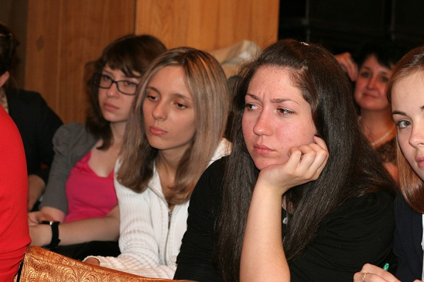

Эта рабочая неделя закончилась для меня в Доме актёров. Дело в том, что именно в нем организаторами кузбасского медиаклуба было решено провести очередную его встречу. Темой встречи явился поиск разногласий между журналистами и пресс-службами компаний и ведомств. Подготовка к встрече шла весь апрель, и благодаря нескольким рабочим встречам, на мой взгляд всё получилось именно так как хотелось.
Прошлая организованная медиаклубом, под руководством Гульсары Михайлиной, встреча проходила в одой из блочных аудиторий КемГУ в формате дискуссии. В этот раз формат было решено несколько расширить, предварив саму дискуссию импровизированным розыгрышем ситуации, которая, к сожалению могла случиться.
Ситуация заключалась в следующем:
В ночь с воскресенье на понедельник произошел взрыв метана в главной лаве шахты. Произошло все это во время пересменки. Потому под землей было человек 600. 550 вышли сами. Пожара удалось избежать и повторных взрывов - тоже. Но много обрушений. И 50 человек осталось за завалом. Допустим, что все они живы. И главное - разобрать завал метров 30. Разбор идет очень тяжело, потому что не везде можно использовать технику. Сложность еще и в том, что связи с шахтерами после первых суток прервалась.
Предполагается, что пресса будет добиваться от пресс-служб эксклюзивной информации, а пресс-службы «действовать в рамках». «Медийная» составляющая усугубляется еще и тем, что появляется блогер, которому вроде как известно то, о чём говорить в открытую нельзя.
Противоборствующие стороны сформировались следующим образом:
СМИ
- Евгений Демченко (департамент строительства Кемеровской области) исполнил роль журналиста «Комсомольской Правды»
- Юлия Борисова (Федерации профсоюзных организаций Кузбасса) сыграла журналиста областной лояльной администрации газеты
- Зинаида Жук (система «Регионмарт») писала посты, подбрасывая СМИ «жареные» факт, играя блогера
Пресс-службы
- Татьяна Думенко (газета «Кузбасс») защищала интересы компании-собственника шахты, представляясь её пресс-секретарём
- Павел Казаков (газета «Аргументы и Факты») исполнил роль пресс-службы МЧС
- Максим Шипачев (в смысле я) старательно пытался изобразить пресс-службу администрации
Несмотря на, то что кроме короткой вводной над сценарием мы не работали, получилось на мой взгляд вполне правдоподобно и органично. Сложность «постановки» была еще и в том, что участники фактически поменялись ролями, т.е. СМИ представили интересы пресс-служб, а пресс-службы, наоборот сыграли СМИ. По мнению Евгения Демченко, таким образом в итоге получился самый настоящий шарж.
Из ситуации намеренно были выброшено большое количество персоналий, без которых в настоящей жизни никак не обошлось бы. Это и коммерческий отдел СМИ, и руководство организаций, и редакторы газет, и, к примеру, тот же мэр города. Но у мероприятия был регламент, поэтому в «труппе» остались только шестеро.

После разыгрывания ситуации не задействованные в постановке журналисты и пресс-службы компаний рассказали нам о допущенных ошибках, а друг другу о недочётах допускаемых ими в реальной жизни.
